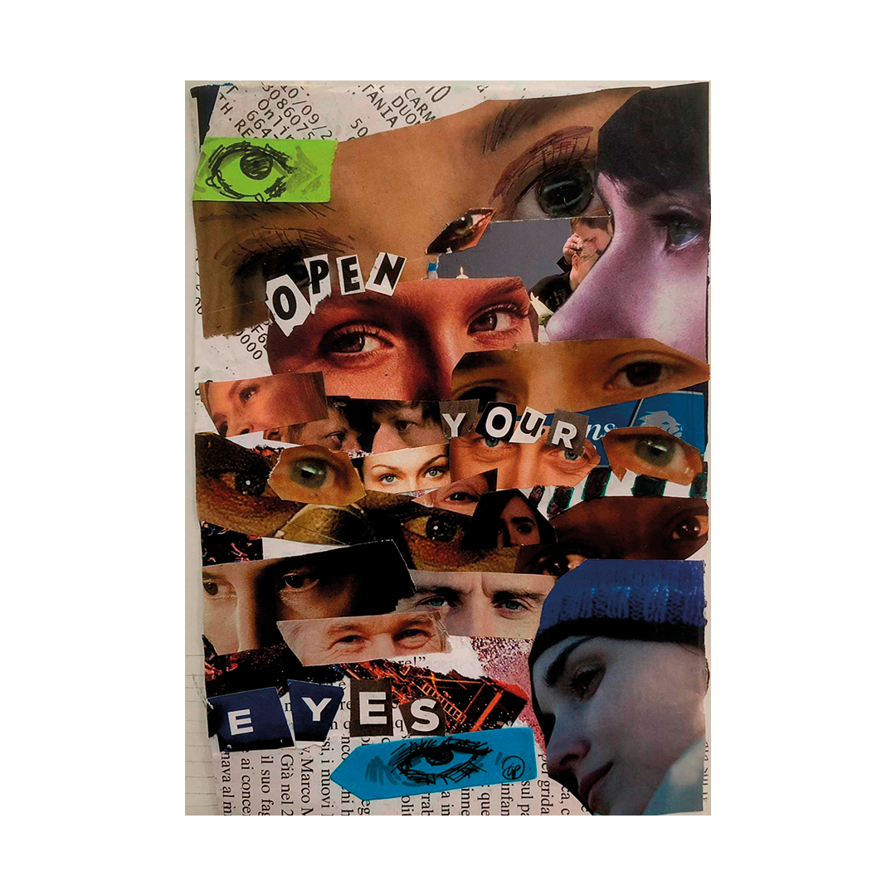
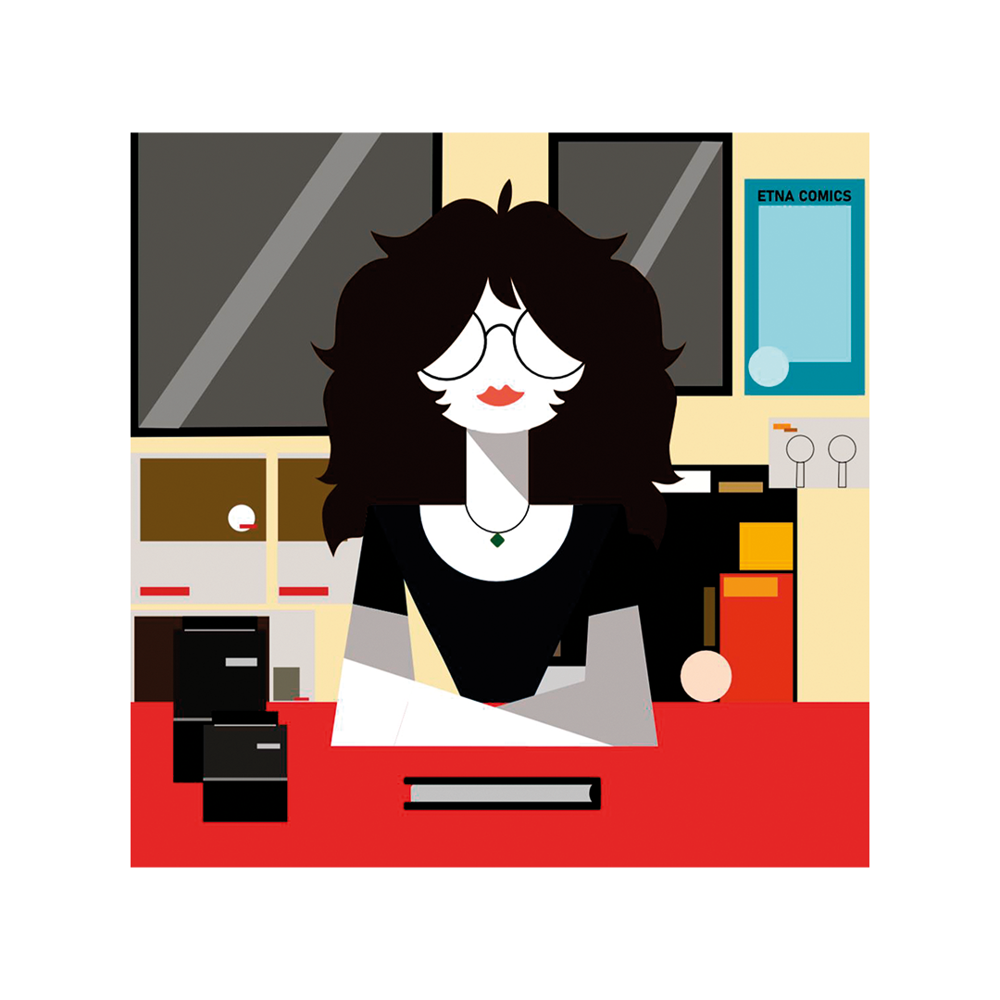
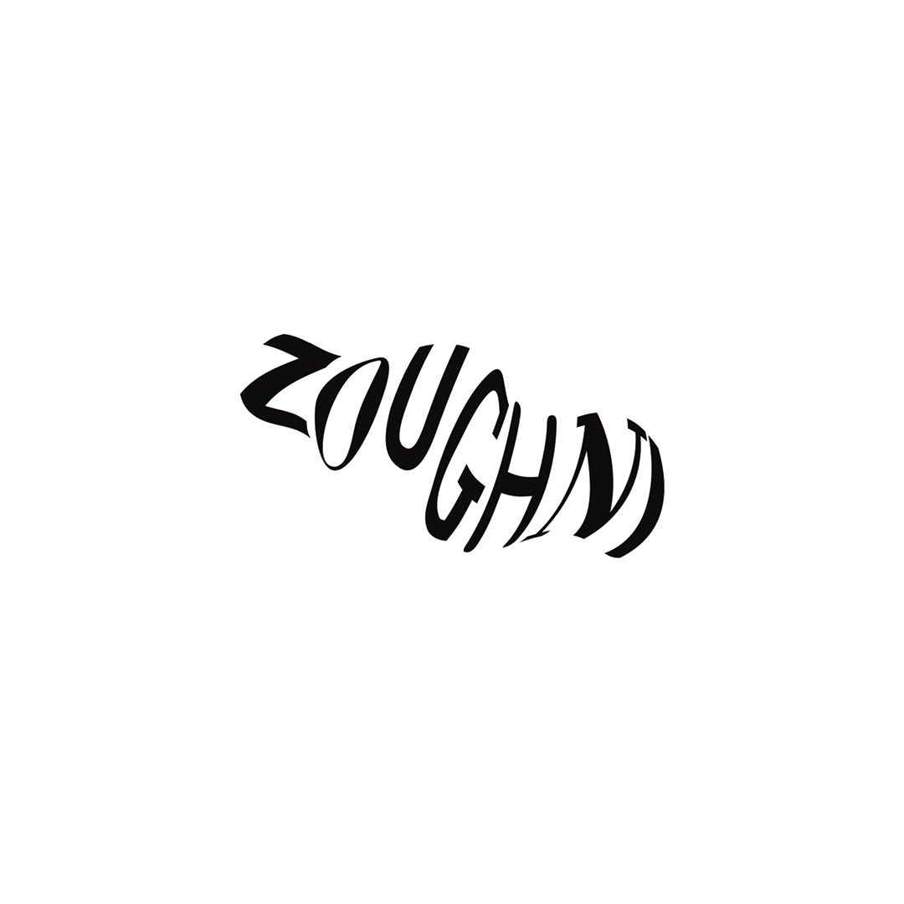
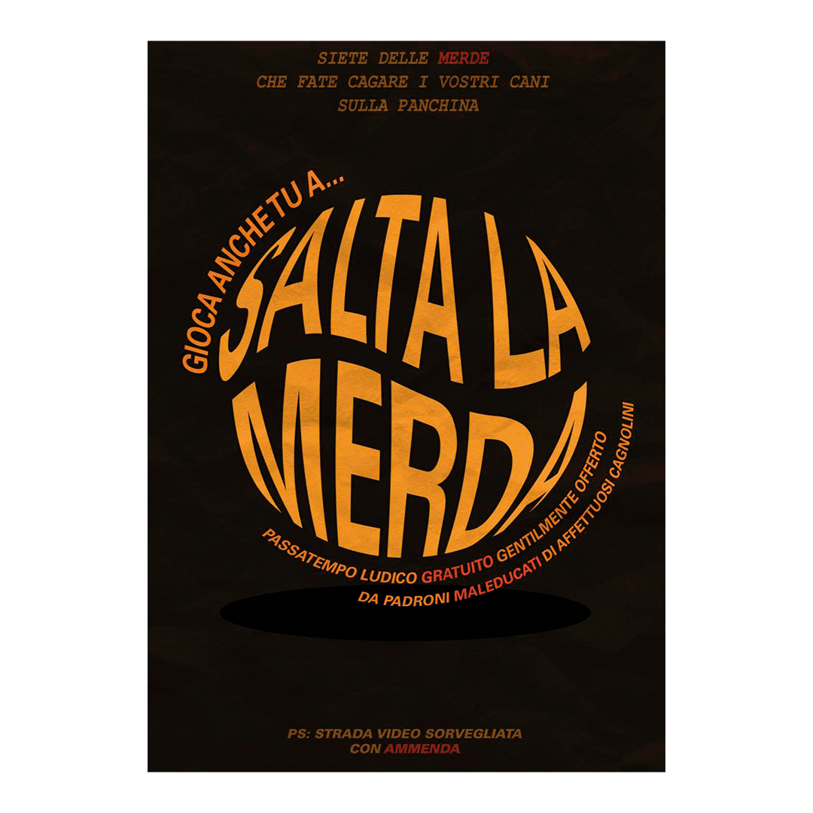
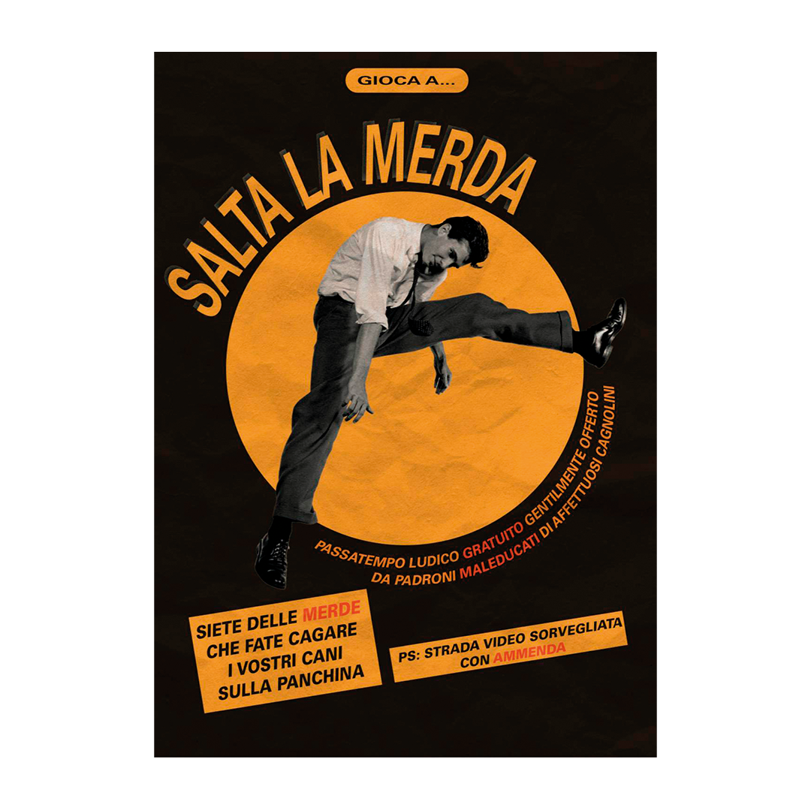
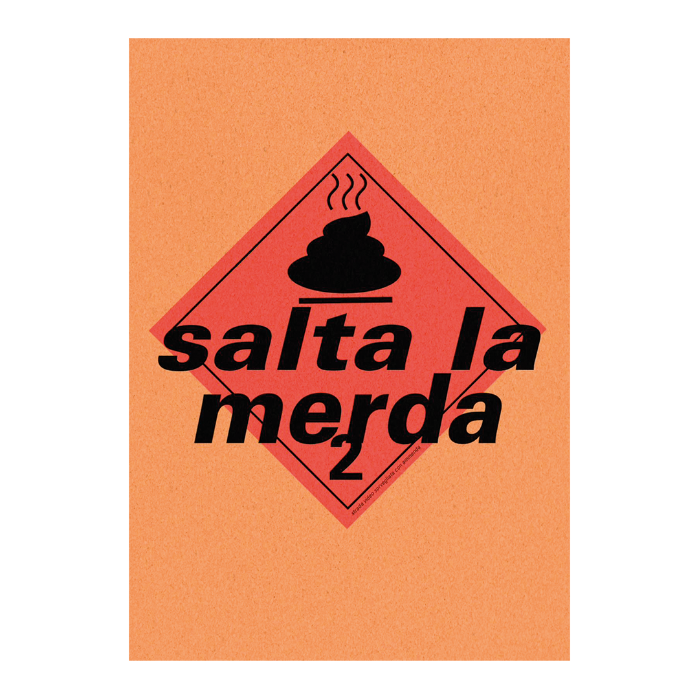

Come prima esercitazione sono stata coinvolta nella creazione di un piccolo collage, subito dopo aver appreso le basi di questa tecnica. Ho utilizzato ritagli di riviste, giornali e fotografie.
L’opera è intitolata “Open Your Eyes”.

Come seconda esercitazione mi sono occupata della creazione di un Knolling digitale su Photoshop. Il Knolling è un termine popolare nel design e nella fotografia, che prende il nome dalla famosa azienda di mobili Knoll. È una tecnica diventata popolare dal 2009, grazie ai lavori dell’artista e scultore Tom Sachs.

Un’altra esercitazione prevedeva la creazione di un autoritratto con arte vettoriale minimale, prendendo come punto di riferimento una serie di ritratti chiamata “Dirimpettaie” dell’artista e designer Francesco Poroli.
L’obiettivo era quello di usare solamente forme geometriche. Il lavoro è stato realizzato su Illustrator.

Questa esercitazione, invece, era incentrata sulla creazione di un manifesto tipografico. Il contenuto non è altro che una trascrizione di un audio demenziale che mi è stato assegnato. Si prediligevano solamente i colori bianco e nero.
Anche questo lavoro è stato fatto su Illustrator.



Come ultima esercitazione ho riprogettato su Illustrator tre varianti differenti di un “annuncio brutto” che ho selezionato.
La prima variante prevedeva solo l’uso di forme vettoriali e tipografia, la seconda prevedeva l’inclusione di fotografie, e la terza prevedeva la riprogettazione di una copertina di un album musicale a scelta con quanto scritto nell’annuncio selezionato.
L’album che ho selezionato è “Blue Lines”, dei Massive Attack.
.jpg)